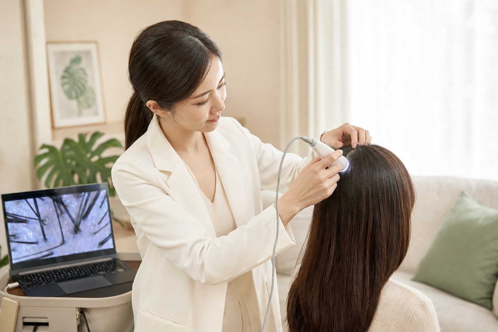
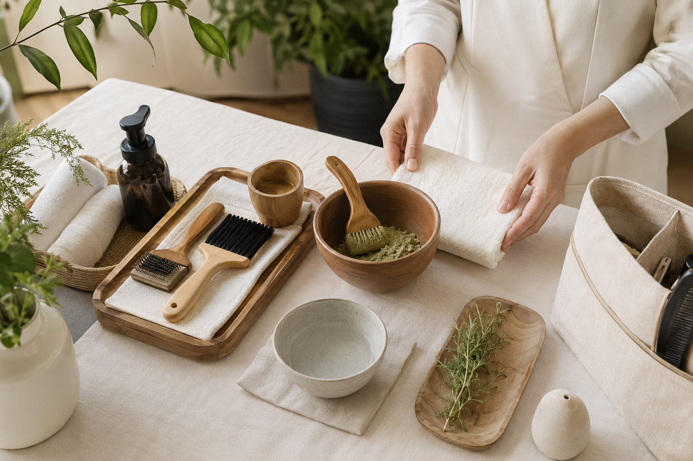
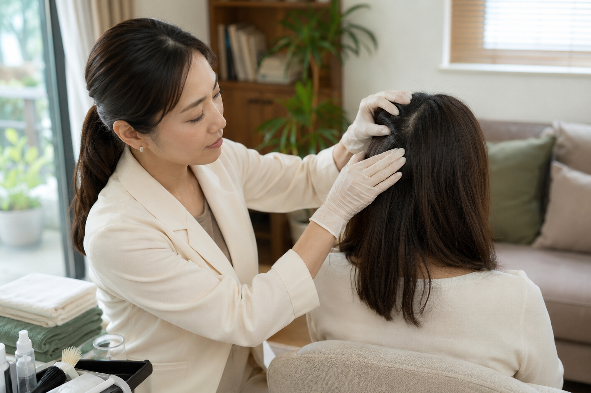

頭皮觀察與淨化養護
適合容易出油、悶癢、頭皮屑或想定期整理頭皮環境的人。
- 需求與生活習慣訪談
- 頭皮影像觀察
- 清潔與日常養護建議
OUR SERVICES
依照頭皮狀態、髮長與生活需求，安排適合的一對一養護。
OUR SERVICES
服務內容與頻率會依頭皮狀態、髮長及生活需求調整，初步了解後再提供個人化建議。
適合容易出油、悶癢、頭皮屑或想定期整理頭皮環境的人。
以植物草素材搭配頭皮狀態，提供溫和、放鬆的一對一養護體驗。
適合有白髮染護需求，並希望了解不同染護方式與日常照顧的人。
適合長期用腦、壓力大，或頭頸經常感到緊繃、想好好休息的人。
SERVICE PROCESS
從頭皮影像觀察、用品準備到實際養護，事前說明每個步驟，讓服務過程更安心。



POSTPARTUM CARE
產後數月出現掉髮增加相當常見，但每個人的恢復速度與身體狀態不同。我們會透過影像紀錄與生活訪談，陪你理解目前的狀態，並建立溫和可執行的居家養護方式。
若有局部禿髮、頭皮紅腫疼痛、傷口或持續異常落髮，將建議優先由皮膚科醫師評估。
LINE 諮詢產後頭皮照護 →
PRIVATE CONSULTATION
加入官方 LINE，告訴我們目前最在意的頭皮問題、髮長、近期染髮時間與所在區域，我們會協助你從適合的方向開始。